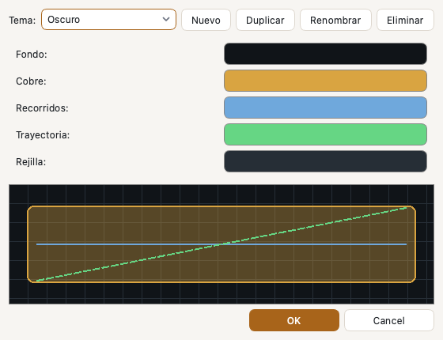
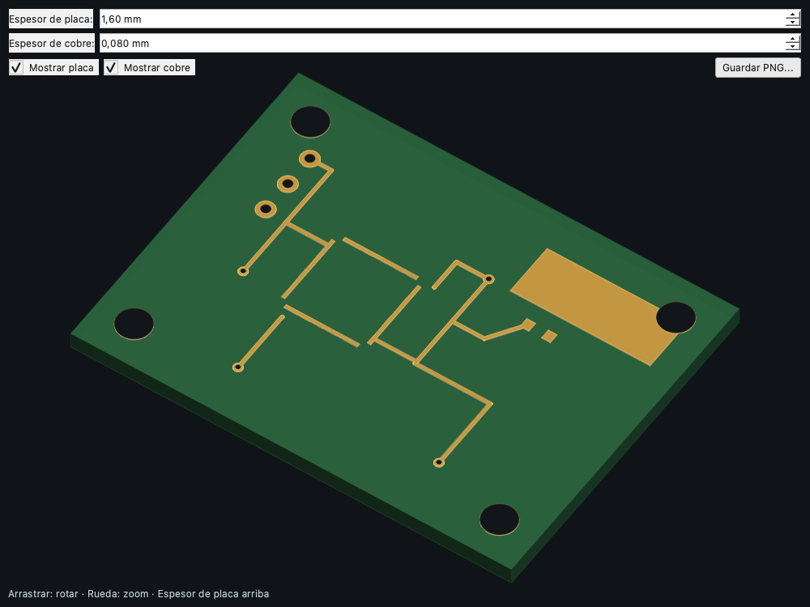
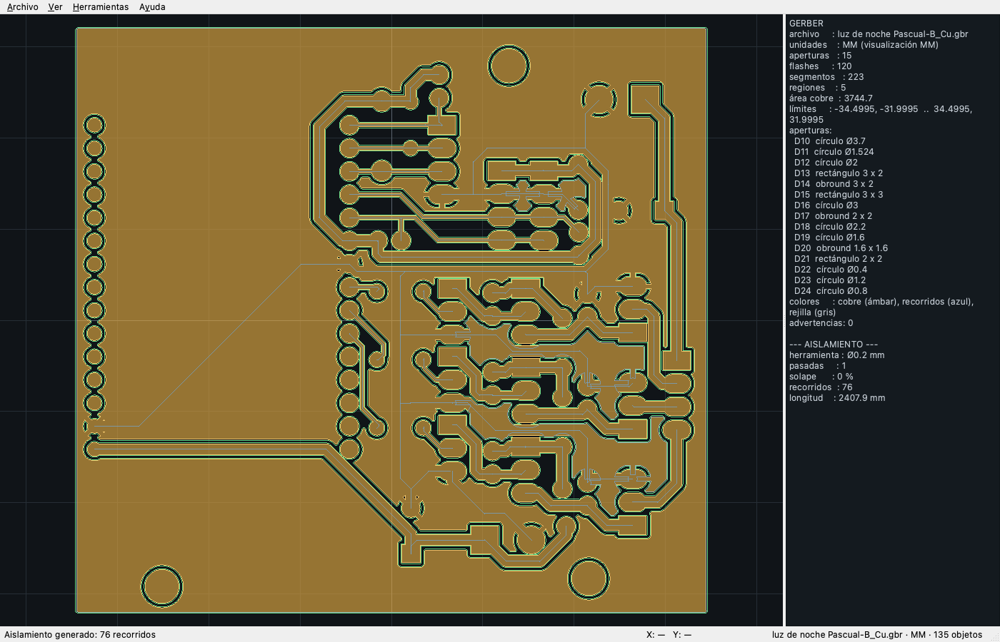

Visualización
Canvas, capas, unidades y vista 3D
El visor es la herramienta principal para comprobar que la geometría, los recorridos y las unidades son correctos antes de generar G-code.
Navegación
| Acción | Cómo |
|---|---|
| Zoom | Rueda del mouse, Ctrl + + / Ctrl + −. |
| Desplazar | Arrastrar con el botón izquierdo. |
| Ajustar | F o Ver → Ajustar a ventana. |
| Seleccionar | Clic sobre un objeto; se resalta y actualiza Propiedades. |
| Zoom a objeto | Doble clic. |
| Medir | Herramienta → Medir distancia: elegí dos objetos; se dibuja la línea del par más cercano. |
Capas y colores
- Vis: muestra u oculta la capa.
- Orden: la fila superior se dibuja encima.
- Color del cobre: Opciones → Color del cobre o Preferencias → Colores.
- Recorridos: color independiente para trayectorias generadas.
- Sólido / contorno: el objeto Gerber se puede dibujar relleno o sólo borde.
- Multicolor: usa colores por apertura para distinguir pistas y pads.
Unidades y coordenadas
La barra de estado muestra la unidad activa y las coordenadas del cursor. Opciones → Mostrar en pulgadas cambia toda la interfaz a pulgadas; las tablas y el editor Excellon convierten los valores al leerlos y escribirlos.
La unidad de visualización no cambia la geometría: un objeto de 10 mm sigue midiendo 10 mm. Los datos internos y el G-code usan la unidad del proyecto/postprocesador.
Temas del visor
En Ver → Temas del visor (o Opciones → Temas del visor) se eligen los colores del fondo, el cobre, los recorridos, la trayectoria y la rejilla. Incluye temas Oscuro, Claro (fondo blanco), Papel, Azul noche y Alto contraste. Podés crear, duplicar, renombrar, editar y eliminar temas; el seleccionado se guarda en las preferencias.

Rejilla, snap y origen
El visor resalta los ejes de máquina X=0 (verde) e Y=0 (rojo), muestra marcas de coordenadas y un panel con los límites y medidas de la PCB. Si el origen queda fuera de la placa, dibuja una línea punteada con el recorrido ΔX/ΔY desde (0,0) hasta el punto más cercano.
- Ver → Rejilla: muestra una grilla de referencia.
- Opciones → Snap a rejilla: redondea coordenadas de salto y medición.
- Opciones → Paso de rejilla: separación en la unidad activa.
- Herramienta → Definir origen: cambia el origen de visualización.
- Herramienta → Ir a coordenadas: centra la vista en X/Y.
Vista 3D

Ver → Vista 3D abre una ventana con el cobre y la placa:
| Control | Efecto |
|---|---|
| Arrastrar | Rotar yaw/pitch. |
| Rueda | Zoom. |
| Espesor de placa | Altura del sustrato (por defecto 1,6 mm). |
| Espesor de cobre | Altura del cobre extruido (0,08 mm). |
| Mostrar placa / cobre | Muestra u oculta cada parte. |
| Guardar PNG | Exporta la vista actual. |
Los taladros del Excellon se dibujan sobre el cobre. El sombreado es Lambert por cara y el orden es por profundidad; no requiere GPU.
Rendimiento
- Para placas grandes, usá contorno en vez de sólido relleno.
- Ocultá capas que no estés mirando.
- El zoom extremo puede ralentizar el dibujo de muchos segmentos; ajustá a ventana para recuperar fluidez.
- Los proyectos comprimidos se leen en streaming; abrí un solo objeto si el proyecto supera la memoria disponible.
Placa real
